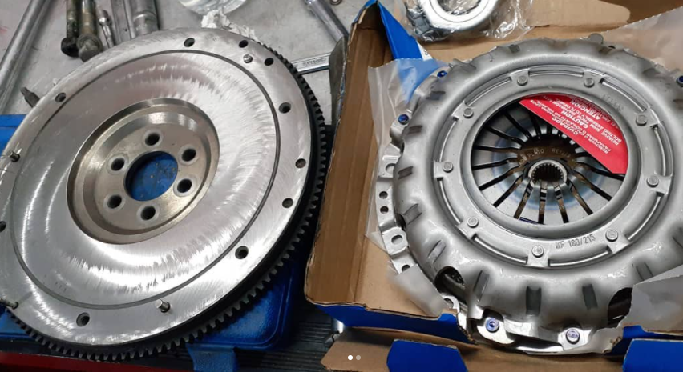

𝗟𝗲𝘀 𝗺𝗼𝘀𝘁𝗿𝗮𝗺𝗼𝘀 𝘂𝗻 𝘁𝗿𝗮𝗯𝗮𝗷𝗼 𝘀𝗶𝗺𝗽𝗹𝗲 , 𝗽𝗲𝗿𝗼 𝗾𝘂𝗲 𝗱𝗲𝗯𝗲 𝗿𝗲𝗮𝗹𝗶𝘇𝗮𝗿𝘀𝗲 𝗯𝗶𝗲𝗻 , 𝘀𝗶𝗲𝗺𝗽𝗿𝗲 𝗿𝗲𝗰𝘁𝗶𝗳𝗶𝗰𝗮𝗿 𝗲𝗹 𝘃𝗼𝗹𝗮𝗻𝘁𝗲 𝗱𝗲 𝗶𝗻𝗲𝗿𝗰𝗶𝗮
(𝘃𝗼𝗹𝗮𝗻𝘁𝗲 𝗱𝗲 𝗲𝗺𝗯𝗿𝗮𝗴𝘂𝗲) 𝘆 𝗰𝗮𝗺𝗯𝗶𝗮𝗿 𝗹𝗼𝘀 𝗿𝗲𝘁𝗲𝗻𝗲𝘀 𝗱𝗲 𝗯𝗮𝗻𝗰𝗮𝗱𝗮 , 𝗱𝗲 𝗲𝘀𝘁𝗮 𝗺𝗮𝗻𝗲𝗿𝗮 𝗲𝘃𝗶𝘁𝗮𝗺𝗼𝘀 𝗽𝗲́𝗿𝗱𝗶𝗱𝗮𝘀 𝗱𝗲 𝗮𝗰𝗲𝗶𝘁𝗲 𝘆 𝗻𝗼𝘀 𝗮𝗵𝗼𝗿𝗿𝗮𝗺𝗼𝘀
𝘁𝗲𝗻𝗲𝗿 𝗾𝘂𝗲 𝘃𝗼𝗹𝘃𝗲𝗿 𝗮 𝘀𝗮𝗰𝗮𝗿 𝗹𝗮 𝗰𝗮𝗷𝗮 𝗱𝗲 𝘃𝗲𝗹𝗼𝗰𝗶𝗱𝗮𝗱𝗲𝘀 𝗶𝗻𝗻𝗲𝗰𝗲𝘀𝗮𝗿𝗶𝗮𝗺𝗲𝗻𝘁𝗲.
